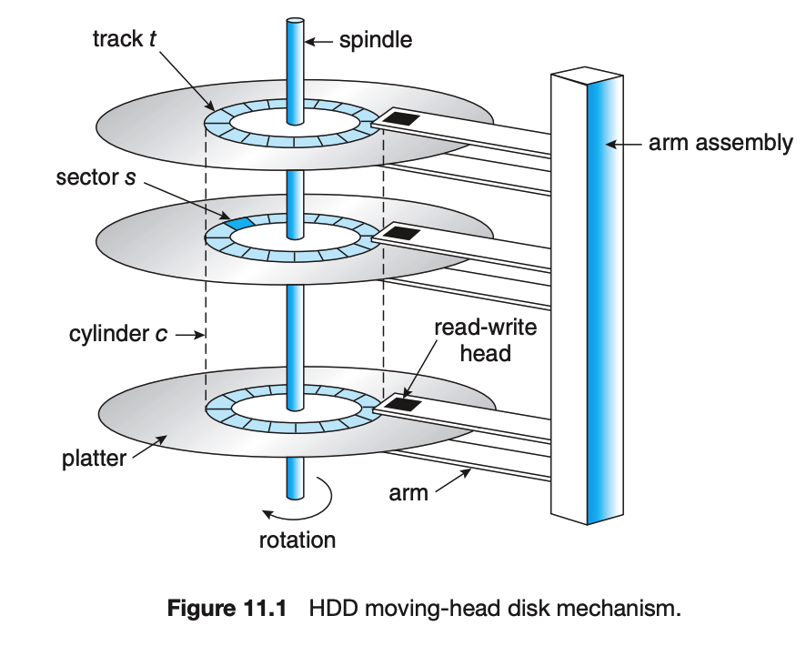

The professor included a bunch of shit in the slides that isn't mentioned in the textbook. So I'm going to cover what is in the quiz sample topics here, as this is likely more of a priority. There are more discrepencies, this is just square 1.
The moving-head disk mechanism is a key component of traditional hard disk drives (HDDs). This mechanism involves a set of read-write heads that are attached to an arm assembly. The heads move across the surface of the rotating disk platters to read or write data. Each platter has concentric circles called tracks, and the tracks are further divided into sectors. The arm assembly moves the heads to the track containing the desired sector, where data can be read or written.
Seek time, a major component of disk access time, refers to the time it takes for the disk arm to move the heads to the correct track. Rotational latency is the additional time needed for the disk to spin the correct sector under the read-write head. Together, these mechanisms enable the HDD to access any block of data directly and rapidly, which is essential for the efficient operation of the disk.
Read more on PDF page 575 Hard Disk Drives (HDDs) are designed with platters that are flat, circular disks similar in appearance to CDs. Common platter diameters range from 1.8 to 3.5 inches. Both surfaces of a platter are magnetically coated to store data. Data is recorded and read by the read-write heads that "fly" just above each platter surface. The heads are mounted on a disk arm, moving all heads simultaneously. The surface of each platter is divided into circular tracks, further divided into sectors, with the set of tracks at one arm position forming a cylinder. A typical disk drive contains thousands of these cylinders, and each track holds hundreds of sectors. The smallest unit of transfer in a HDD is a sector, which was traditionally 512 bytes in size but has since moved to 4KB sectors around 2010. The disk drive motor spins the platters at high speeds, commonly ranging from 5,400 to 15,000 RPM (rotations per minute), with rotation speed affecting data transfer rates. The key performance aspect of HDDs is the random-access time, which includes the seek time (time to move the disk arm to the desired cylinder) and the rotational latency (time for the desired sector to rotate to the disk head).
SourceHard Disk Drives (HDDs), Solid State Drives (SSDs), and Magnetic Tapes are distinct types of storage media used in computer systems. HDDs use magnetic platters for data storage, making them susceptible to mechanical wear and tear. They have seek times and rotational latencies that can affect performance. In contrast, SSDs, which fall under Non-Volatile Memory (NVM) devices, store data on flash memory and have no moving parts, leading to faster access times and greater reliability compared to HDDs. However, SSDs are generally more expensive per megabyte and have less capacity than larger HDDs. On the other hand, Magnetic Tapes are used primarily for backup and storage of infrequently used information. They have slow access times compared to HDDs and SSDs, making them less suitable for secondary storage. Tapes offer large capacity storage and are useful for transferring information between systems or for keeping backup copies.
SourceStorage Area Networks (SANs) and Network-Attached Storage (NAS) are two methods of providing networked storage. SANs are high-speed networks that provide block-level network access to storage. They are typically used to connect servers with data storage devices. NAS provides file-based storage over a network. NAS devices are often standalone appliances that contain one or more hard drives.
Both SANs and NAS provide ways to consolidate storage, improve efficiency and accessibility, and support a wide range of data management tasks.
Read more on PDF page 576RAID (Redundant Array of Independent Disks) structures offer enhanced data storage reliability and performance by combining multiple disk drives. RAID can be implemented in various forms, with each RAID level providing a balance between reliability and data transfer rates. The most common RAID levels are:
RAID can be implemented via volume-management software, host bus-adapter hardware, storage array hardware, or SAN interconnect layer. Each implementation offers different levels of cost, flexibility, and features. RAID is used not only for its higher data-transfer rates but also for its increased reliability. However, RAID is not immune to data loss due to software or hardware failures.
Source\( \textbf{Disk Capacity} = (\text{# of surfaces}) \cdot \text{# of tracks per surface } \cdot \text{# of sectors per trck} \cdot \text{(size of sector)} \)
Basically, you just multiply these properties together
Seek Time: This is the time it takes for the head to move to the track
Rotational Latency: This is the time it takes for the sector to rotate to the head, avg = 1/2 rotation time
= \( 60/RPM/2 \)
Disk Access Time = seek time + rotational latency + data transfer rate + controller overhead + queing delay
Seems to be a simple sum of every parameter the might give you on the quiz
How to find it? Answer is typically MB/s
Example: Disk has 16 surfaces, 128 tracks/surface, 256 sectors per track, and 512 bytes sector, rotates at 3600RPM
Per track, we have RPM/60, or 3600/60 -> 60 rotations per second. We can do one rotation per surface, and each surface has multiple tracks.
So, in each 60th of a second, we can handle one entire track, which is the number of sectors per track, times the size of each sector. So here, in one second, we get 60 (rotations) * 256 (sectors per track) * 512 (bytes per track). We disregard the number of tracks per surface, because we can only read one track per rotation.
So, our final answer is 16(surfaces) * 60 (rotations per second) * 256 (sectors) * 512 (bytes per sector)